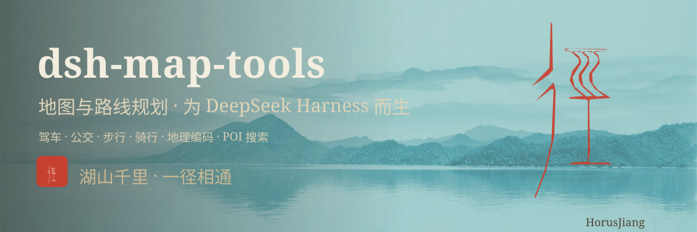
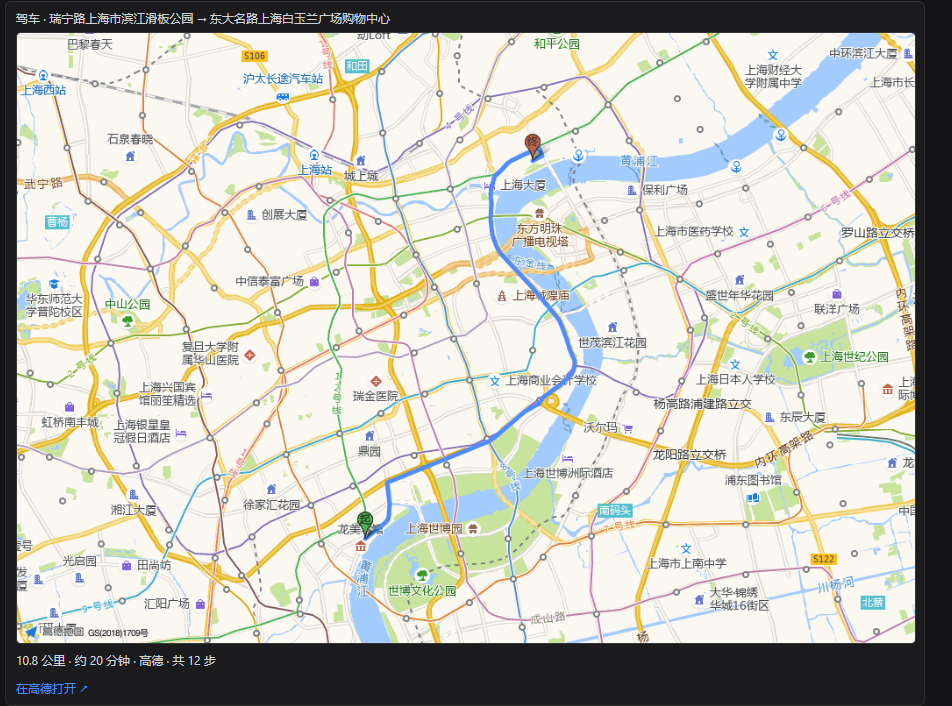

地图与路径规划 · DeepSeek Harness
给 DeepSeek Harness 的原生地图工具。模型直接调用，不需要 MCP、不需要额外的服务；算完的路线会变成一张真地图卡片，落在回答的下方。
$ dsh plugin --profile web add dsh-map-tools
桌面版：侧边栏「插件」→「添加插件」→ 包名填 dsh-map-tools。没有高德 key 也能跑驾车 / 步行 / 骑行；中文地址需要 key，免费申请。

驾车、公交、步行、骑行四种走法，高德真底图上画折线、标起终点、算距离与耗时——不是示意图，也不是文字描述。
地址转坐标、坐标转地址、周边 POI 搜索都走高德。key 只存在本机配置文件里，永不回显在页面、日志或模型上下文里。
卡片整轮只在回合尾部出现一次，过程区不重绘；写进模型上下文的只有距离与耗时这些数字，不额外占 token。